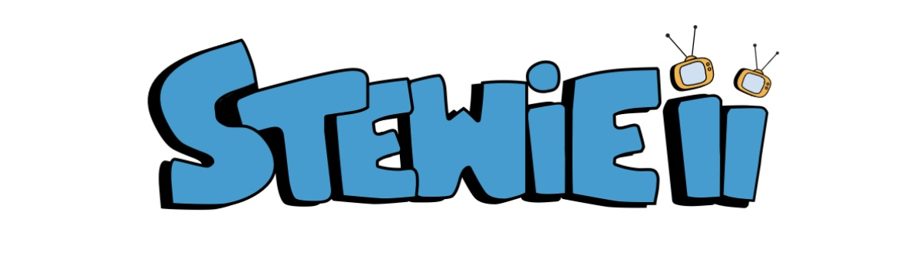

My favourite albums
My top albums of all-time.
Baduizm
Erykah Badu
Mama's Gun
Erykah Badu
Diamond Life
Sade
Negro Swan
Blood Orange
Who Is Jill Scott
Jill Scott
Malibu
Anderson Paak
Cyan blue
Charlotte Day Wilson
Flower Boy
Tyler The Creator
Kaytranada
99.9%